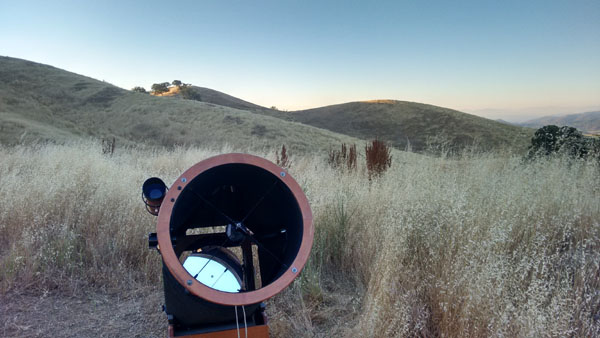

OR: A Three Mark Night at Willow Springs 160604
by Mark Wagner
|
Its an easy drive past the southern crush of the Bay Area megalopolis, down the peninsula from my home on the coast near San Francisco. Two hours, past San Jose, Gilroy's garlicy aroma, Hollister, past Tres Pinos toward Pinnacles National Monument, and turning off at tiny Paicines onto the twisting Panoche Road toward the quicksilver mines of New Idria. The drive is both familiar and exhilarating. Late spring colors on the quickly browning summer landscape, navigating almost on autopilot into the deep cut river canyon that leads past scattered haciendas. Today, overhead, clouds thickened and even seemed to show a reddish tone. The road is lightly traveled. A metaphor, actually, for our hobby and especially for the end of it my friends and I pursue. I approached the final few curves before the turnoff from paved to dirt road when a car appeared behind me from a turn, and I knew it was Steve Gottlieb, right on time. Around the next turn was Mark(o) Johnston's vehicle parked at the turnoff, and another unrecognized vehicle. It was Mark McCarthy, whom I never observed with. This was to be Night Of The Three Marks, and a Steve. Marko greeted me by pointing to the deeply colored clouds, and uttering the word "fire". He and I drove a short distance to a CDF station, where there was a wifi signal, the only possibility for info in these remote parts. The wifi was locked, but Marko guessed the password, only to find its MAC was inaccessible! With no info on the fire, the four of us stood deciding what to do. Realizing we'd easily see it coming over the mountains from where we'd be observing, up we went. We drove the dirt roads through the window high grasses, to the spot at 3,000 feet, set up our gear, and waited for dark. Mars was obvious well before dark, followed by the bright navigational stars of late spring and early summer. By 10:30 P.M. we were at our telescopes. Steve was viewing interacting pairs of galaxies, Marko some of the more interesting and challenging Hicksons, Mark III busy atop his f/long Dob, and I with a list of Arps, KTG trios, and Abell Galaxy Clusters. The breeze, which had been from the southwest, changed to offshore and our skies miraculously cleared. We were getting consistent SQM readings of 21.7, so it was a good night. A few highlights were especially memorable. One was standing facing south with the entire shape of Scorpius, upright, clear views all the way to well under the bottom of the tail. So dark and clear the great bulge of the Milky Way extended past Saturn, into Ophiuchus. This was about as deep a view of the Milky Way as I recall, Steve commenting on how obvious the The Pipe Nebula was. Glorious! Truly, one of the few times looking just at the sky gave moments of excited transcendence. More of that, please! Then, Mark III suggested I try his pair of 2.1x42 binoculars. Never had I heard of such optics. At first they were very disorienting, giving a 28 degree field of view. Almost vertigo. Then, acclimating, I realized how many stars were showing, including clusters, in and around Scorpius. What a view! I began in earnest at 10:30 P.M.. The night was interspersed with views through Marko and Steve's scopes as well. A rather relaxed, convivial observing session. I finally decided it was time to turn in at 2:30 A.M., fatigued, realizing getting up at 5:30 A.M. does take its toll. I got into my Honda Fit; a six foot man in a sardine can. But it works. There I stayed until the sun crested the tall hills to the east at 7:30, when the heat forced my escape.  The morning view to the south was beautiful; the big Panoche Valley laid out before me, telescopes lined up at ease, birdsongs, and horses standing atop a distant peak. By 10, I was back in the south bay, where the skies are empty. Here are my observing notes, with images added today while writing. Equipment an 18" f/4.5 Dobsonian, with Nagler eyepieces: —Mark Wagner
|
|
7mm: 294X. Tiny pinpoint of an obvious stellar core, with large extended halo mostly round, but slightly elongated N/S. Small core around nucleus.Overall, 3'x2' size, with a possible bar or arms along the elongation. Possible dark lane cutting across the minor axis to the S of the nucleus? This galaxy is larger than first thought. Star embedded just off N side of nucleus.
7mm 294X
Superb view with VHT filter (once manufactured by DGM) showing seven distinct HII regions around a large central core. Without filter small bright nucleus embedded in large core,
three arms, one very long with many HII regions, another wraps shortly opposite the large arm, but around, and the third is somewhat of t thick stub. Galaxy is dim, but really
terrific.
20mm: 103X A really beautiful field at low power. A double star is offset from the dim glow of the pair of galaxies, with a trail of four nearly equal magnitude stars trailing away from the
double stars, which are much brighter. Across the galaxies, and perpendicular to the trail of four stars is another pair of stars, mid-brightness between the magnitudes of the
double and trail of four stars. Magnificent view. The pair of galaxies are quite obvious, the smaller one, away from the double star, much brighter, and perhaps disrupted, whereas
the dimmer galaxy toward the double star is significantly larger. Both galaxies mimic the line of dim stars to their side, and are set so as to appear as if a line from the wider
mid-range pair of stars perpendicular to the dim line of star, nearly bisects the galaxy. Even 7mm: 294X Arp 136 with the 7mm, loses the nice star field , but the galaxies show detail. The smaller one is bright and has a stellar nucleus, showing possible disruption in
the extended envelope - possible arms winding around the core. The larger galaxy is a challenge to view, requiring averted vision to show a large even, featureless oval
glow.
7mm: 294X Pair of galaxies that may be interacting. Smaller one is round and dimmer with a pinpoint bright stellar nucleus. Larger and brighter galaxy is elongated, with a
dimmer stellar pinpoint nucleus. Inseparable.
Very small, elongatged, stellar nucleus with averted vision.
Round, dim but obvious, stellar nucleus.
Round and dim, but clearly visible, stellar nucleus. I can never figure out how Steve gets any real detail out of this sort of target.
I observed fifteen galaxies around and including NGC 6166, MGC +7-34-66, It was fun hopping from dim galaxy to dimmer galaxy, trying to navigate, and wait to see if the next target appeared, ghostly out of the black backgroiund, here then gone. Eventually I found the sweet spot in my averted vision, and was able to hold most of what I found. By this time, it was late. I'm used to getting up at 5:30 A.M. and in bed by 10 P.M. Still, its hard to turn off, so I decided to see what else was in the neighborhood in the cluster, maybe I should try observing it. I zoomed my program out to a 1.6 degree field (twice my low power eyepiece field of view), and saw close to 100 galaxies plotted within my magnitude limit. It would require several nights to do this, so it was off to bed in the sardine can, looking out the porthole at Cassiopeia till sleep took me. This was a very rewarding, and reinvigorating night. Till next time, fellow space travelers. Next new moon. |